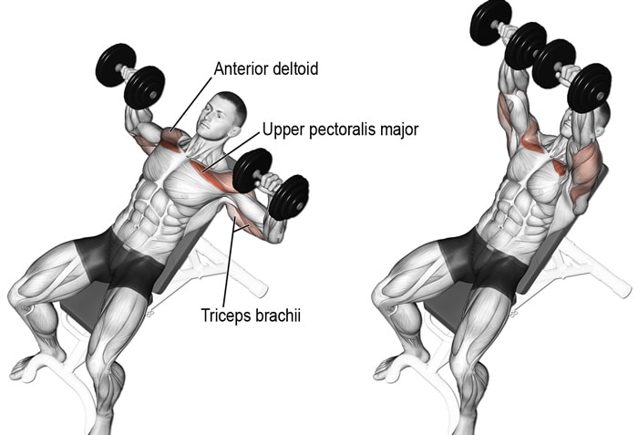
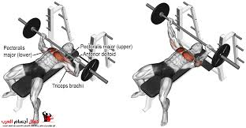
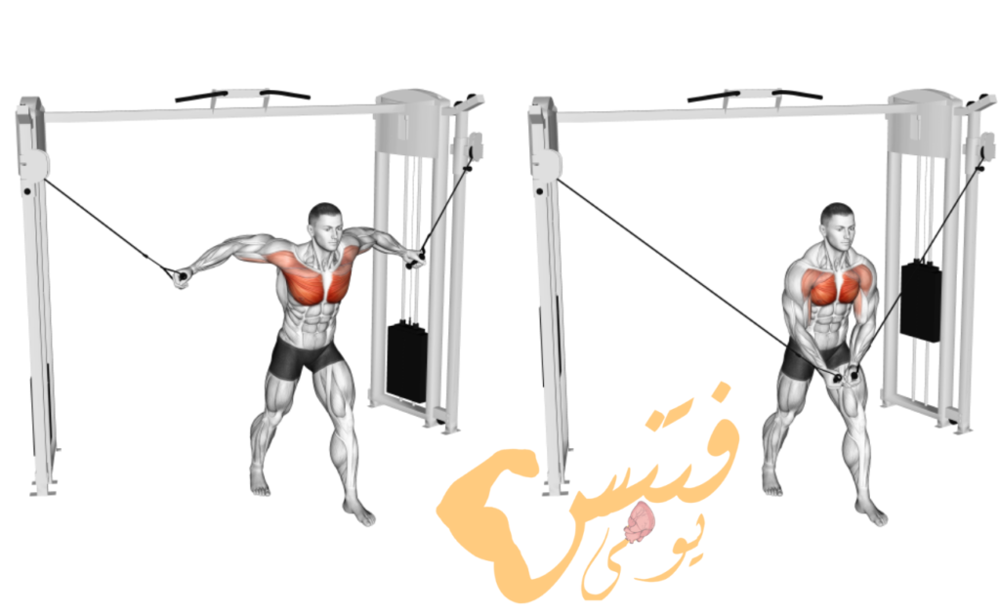
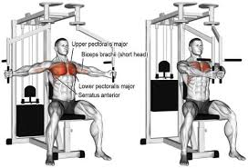

تمرين تجميع مستوي بالدمبل
يستهدف العضلة الصدرية الكبرى

تمرين تجميع عالي بالدمبل
يستهدف العضلة الصدرية الكبرى خصوصا الصدر العلوي والعضلة الصدرية الصغرى

تمرين البنش المستوي
يستهدف باقي العضلة الصدرية الكبرى والصغرى و الكتف الامامية والعضلة المنشارية الامامية والعضلة الغرابية العضدية

تمرين البنش العلوي
يستهدف الصدر العلوي وعضلة الترايسبس و العضلة المنشارية الامامية و عضلة الصدر الصغرى

تمرين تفتيح على الكيبل
يستهدف العضلة الصدرية الكبرى و ويمكنك منه الحصول على اقصى تدفق دموي للعضلة

تمرين تفتيح على الفراشة
من اهم تمارين الاطالة للعضلة الصدرية الكبرى كما انه يستهدف العضلة الغرابية العضدية والراس القصيرة لعضلة الترايسبس